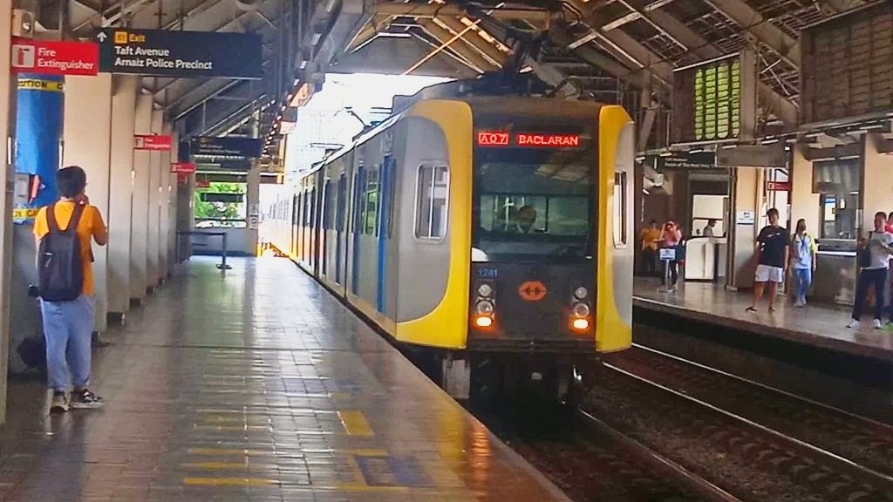

Welcome to Justin LRT!
Last updated on June 1, 2026
Thank you so much for supporting this platform and making my independent project go viral across the community! If you enjoy exploring this space and want to keep these archives and apps accessible online, please consider following and supporting my official channels below:
Facebook
YouTube
TikTok
This platform is a dedicated web hub designed to help you explore fresh insights about the LRT-1 network and interact with custom, web-based commuter applications.
My work is proudly inspired by the operations of the Light Rail Manila Corporation and the dynamic student community of Pasay City West High School.
YouTube
TikTok
This platform is a dedicated web hub designed to help you explore fresh insights about the LRT-1 network and interact with custom, web-based commuter applications.
My work is proudly inspired by the operations of the Light Rail Manila Corporation
and the dynamic student community of Pasay City West High School.
Latest Update
Main page: Justin LRT updates
Justin LRT Graduate Message
March 26, 2026
Justin LRTAccountancy, Business, and Management
Section 12-B
🎓 Batch 2025–2026
🥇 With honors
🎖️ ABM 12-B Class Public Information Officer
🏅 Bookkeeping NC III Passer
🏅 Champion in Accounting Jingle-making Contest
🎗️ SYNERGY 2.0 Participant
🎗️ Accounting Showdown Qualifier
🎗️ Accounting Jingle-making Qualifier
🎗️ DZXL Radio Broadcasting Participant
Sa loob ng halos anim (6) na taon kong pananatili sa Pasay City West High School, dala ko ang bawat alaala, mula sa bawat tawa 😅, kwento 📰, sayaw 🕺, acting 🎭, pasok at labas ng paaralan 🏫, performance tasks 📚, party 🥳, groupings 👫🏻, hanggang sa bawat pagod at tagumpay 🏆. Sa bawat karanasang ito, natutunan ko na hindi lang academics 📑 ang mahalaga, kundi ang mga taong nagbigay liwanag at inspirasyon sa bawat hakbang ko. 😌 See more...
LRT-1
Main article: LRT Line 1

- LRT-1 Navigation Page - a direct shortcut for tracking rolling stock generations, station data, and system operators.
The LRT-1 system is officially owned by the Light Rail Transit Authority (LRTA), while its day-to-day operations and network maintenance are managed by the Light Rail Manila Corporation (LRMC). Service starts on December 1, 1984, the LRT-1 stands as the historic first light rail transit system in Southeast Asia. Spanning a 26-kilometer track network across 25 active stations, it continues to provide rapid transit options featuring crisp air conditioning, fast commute speeds, and beautiful elevated city views.
Explore my comprehensive logs tracking real-time updates, field trainspotting galleries, and commuter ride statistics compiled throughout my transit journeys.
Access the dedicated modules below to learn more:
- LRT-1 System Updates
- LRT-1 Fare Guide & Matrix
- LRT-1 Free Ride Schedules
- LRT-1 Trainspotting by Justin LRT
- LRT-1 Rides by Justin LRT
- Justin LRT Original Songs
- LRT and MRT Rapid System Map
- Official Correspondence with LRT-1 Management
Custom LRT-1 Web Apps
- My LRT-1 Travel Level - an interactive scorecard to calculate and visualize how well-traveled you are across the line.
- LRT-1 Bingo - a fun dashboard tracking classic commuter milestones and experiences.
- LRT-1 Train Car Guide - a technical boarding guide displaying exactly where to stand to align perfectly with station exits for efficient travel.
Pasay City West High School
Main article: Pasay City West High School

Pasay City West High School is a premier, large-scale public secondary educational institution in Pasay City, Philippines, established in 1949. Located along Pasadeña Street, FB Harrison, the campus accommodates a vibrant student body of over 7,500 learners under the current leadership of principal Mr. Agapito Teodoro N. Manaog.
I curated this to highlight the vibrant community, rich history, and ongoing campus milestones that make the largest public high school in Pasay City so exceptional.
Browse the student logs below for detailed pages:
I curated this to highlight the vibrant community, rich history, and ongoing campus milestones that make the largest public high school in Pasay City so exceptional.
Browse the student logs below for detailed pages:
Photography
 |
|
 |
 |
 |
 |
A look at urban transit and student life through my camera lens.
As an avid digital photographer, I log upwards of 1,000 unique shots each year across Metro Manila. Alongside trainspotting, my goal is to share these visual catalogs publicly so everyone can witness how our local transit hubs, campus landscapes, and urban spaces adapt over time.
Click here to access my full digital photography portfolio.
Click here to access my full digital photography portfolio.
Interactive Web Applications
My specialized web apps are custom-built utility tools designed specifically for this platform. These tools run directly within your browser window to offer zero-install commuter tracking, simulation, and entertainment features that you won't find anywhere else.Click here to launch the Web Apps Portal.
About the Developer
 Hello there! My name is Justin. I am an honor graduate of Pasay City West High School (Batch 2026), an independent street photographer, a socio-political song composer, and a passionate rail enthusiast. I travel via the LRT-1 system regularly because I am inspired by its rapid speeds, strict safety protocols, and comfortable, air-conditioned fleet.
Hello there! My name is Justin. I am an honor graduate of Pasay City West High School (Batch 2026), an independent street photographer, a socio-political song composer, and a passionate rail enthusiast. I travel via the LRT-1 system regularly because I am inspired by its rapid speeds, strict safety protocols, and comfortable, air-conditioned fleet.
This site represents my introductory journey into front-end programming and web development. I actively applied advanced AI tools to help program, debug, and structure these modules. If you have feedback, feature requests, or want to contribute to the code, please reach out!
Click here for a deep dive into my personal background.
If you enjoy using this independent web platform and want to keep it online and ad-free, please consider supporting my work. Thank you!